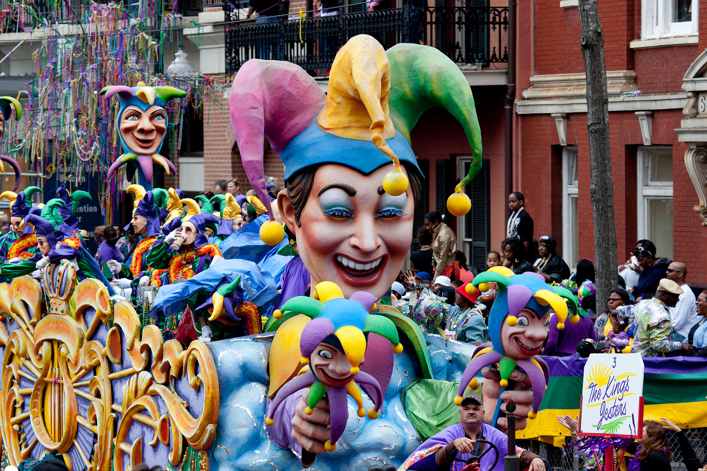
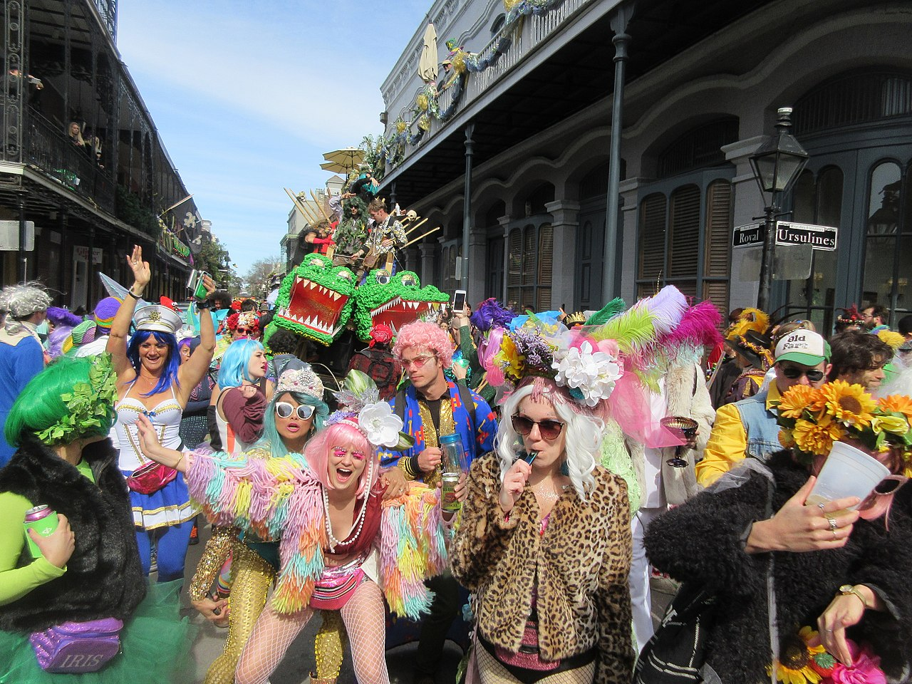
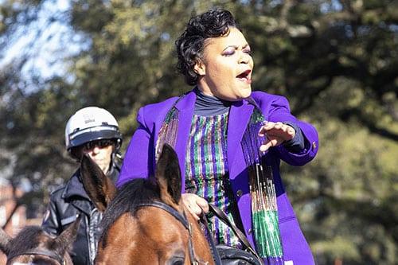
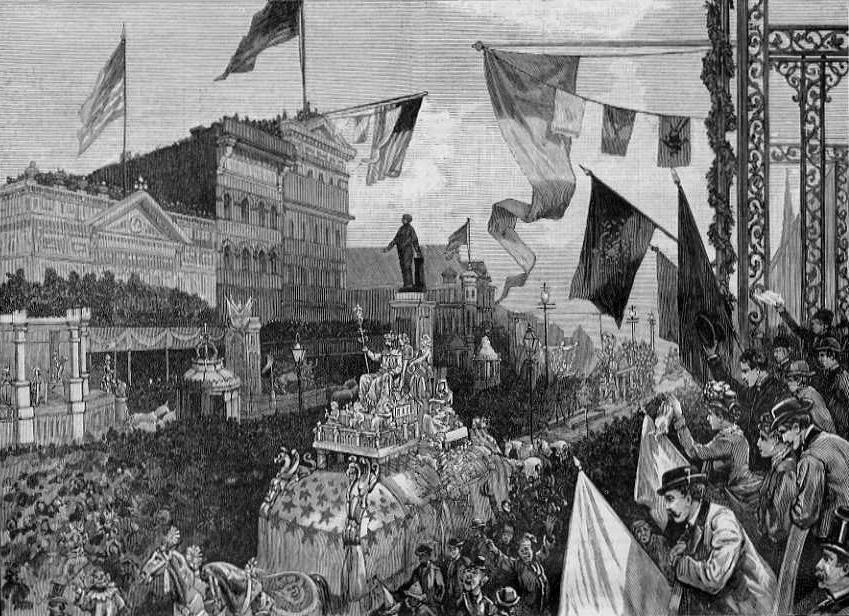
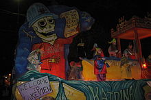

Mardi Gras in New Orleans
 The holiday of Mardi Gras is celebrated in southern Louisiana, including the city of New Orleans. Celebrations are concentrated for about two weeks before and through Shrove Tuesday, the day before Ash Wednesday (the start of lent in the Western Christian tradition). Mardi Gras is French for Fat Tuesday, but the season actually begins on King's Day (12th Night), January 6th, and extends until midnight before Ash Wednesday. Club, or Krewe, balls start soon after, though most are extremely private, with their Kings and Queens coming from wealthy old families and their courts consisting of the season's debutantes. Most of the high society Krewes do not stage parades. As Fat Tuesday gets nearer, the parades start in earnest. Usually there is one major parade each day (weather permitting); many days have several large parades. The largest and most elaborate parades take place the last five days of the Mardi Gras season. In the final week, many events occur throughout New Orleans and surrounding communities, including parades and balls (some of them masquerade balls).
The parades in New Orleans are organized by social clubs known as krewes; most follow the same parade schedule and route each year. The earliest-established krewes were the Mistick Krewe of Comus, the earliest, Rex, the Knights of Momus and the Krewe of Proteus. Several modern "super krewes" are well known for holding large parades and events (often featuring celebrity guests), such as the Krewe of Endymion, the Krewe of Bacchus, as well as the Zulu Social Aid & Pleasure Club—a predominantly African American krewe. Float riders traditionally toss throws into the crowds. The most common throws are strings of colorful plastic beads, doubloons, decorated plastic "throw cups", and small inexpensive toys. Major krewes follow the same parade schedule and route each year.
While many tourists center their Carnival season activities on Bourbon Street, major parades originate in the Uptown and Mid-City districts and follow a route along St. Charles Avenue and Canal Street, on the upriver side of the French Quarter. Walking parades - most notably the Krewe du Vieux and 'tit Rex - also take place downtown in the Faubourg Marigny and French Quarter in the weekends preceding Mardi Gras Day. Mardi Gras Day traditionally concludes with the "Meeting of the Courts" between Rex and Comus.
Contemporary Mardi Gras
Epiphany
Epiphany on January 6, has been recognized as the start of the New Orleans Carnival season since at least 1900; locally, it is sometimes known as Twelfth Night although this term properly refers to Epiphany Eve, January 5, the evening of the twelfth day of Christmastide. The Twelfth Night Revelers, New Orleans' second-oldest Krewe, have staged a parade and masked ball on this date since 1870. A number of other groups such as the Phunny Phorty Phellows, La Société Pas Si Secrète Des Champs-Élysées and the Krewe de Jeanne D'Arc have more recently begun to stage events on Epiphany as well. Many of Carnival's oldest societies, such as the Independent Strikers' Society, hold masked balls but no longer parade in public. Mardi Gras season continues through Shrove Tuesday or Fat Tuesday.
Days leading up to Mardi Gras Day
A 2020 study estimated that Mardi Gras brings 1.4 million visitors to New Orleans. Wednesday night begins with Druids, and is followed by the Mystic Krewe of Nyx, the newest all-female Krewe. Nyx is famous for their highly decorated purses, and has reached Super Krewe status since their founding in 2011. Thursday night starts off with another all-women's parade featuring the Krewe of Muses. The parade is relatively new, but its membership has tripled since its start in 2001. It is popular for its throws (highly sought-after decorated shoes and other trinkets) and themes poking fun at politicians and celebrities. Friday night is the occasion of the large Krewe of Hermes and satirical Krewe D'État parades, ending with one of the fastest-growing krewes, the Krewe of Morpheus.[45] There are several smaller neighborhood parades like the Krewe of Barkus and the Krewe of OAK. Several daytime parades roll on Saturday (including Krewe of Tucks and Krewe of Isis) and on Sunday (Thoth, Okeanos, and Krewe of Mid-City). The first of the "super krewes," Endymion, parades on Saturday night, with the celebrity-led Bacchus parade on Sunday night.
Mardi Gras Day
 The celebrations begin early on Mardi Gras Day, which can fall on any Tuesday between February 3 and March 9 (depending on the date of Easter, and thus of Ash Wednesday). In New Orleans, the Zulu parade rolls first, starting at 8 am on the corner of Jackson and Claiborne and ending at Broad and Orleans, Rex follows Zulu as it turns onto St. Charles following the traditional Uptown route from Napoleon to St. Charles and then to Canal St. Truck parades follow Rex and often have hundreds of floats blowing loud horns, with entire families riding and throwing much more than just the traditional beads and doubloons. Numerous smaller parades and walking clubs also parade around the city. The Jefferson City Buzzards, the Lyons Club, the Irish Channel Corner Club, Pete Fountain's Half Fast Walking Club and the KOE all start early in the day Uptown and make their way to the French Quarter with at least one jazz band. At the other end of the old city, the Society of Saint Anne journeys from the Bywater through Marigny and the French Quarter to meet Rex on Canal Street. The Pair-O-Dice Tumblers rambles from bar to bar in Marigny and the French Quarter from noon to dusk. Various groups of Mardi Gras Indians, divided into uptown and downtown tribes, parade in their finery. For upcoming Mardi Gras Dates through the year 2100 see Mardi Gras Dates.
Mayor of New Orleans
 Cantrell was inaugurated as mayor on May 7, 2018, the first woman to hold the position in the city's history. Once in office, she established a new Office of Youth and Families, with the goal of creating a strategic plan to address families in crisis in the city. Cantrell also founded a Gun Violence Reduction Council, tasked with finding solutions to violent crime. Starting with a push to rededicate hotel taxes collected within the city for city use, Cantrell has focused on her #fairshare initiative to improve city infrastructure, public transportation, public parks, and green spaces. As part of that initiative, in October 2018 the City of New Orleans filed a lawsuit against four opioid manufacturers and distributors.
During the 2019 session of the Louisiana Legislature, Cantrell negotiated the Fair Share Agreement with Governor John Bel Edwards and city, state, and tourism officials. The agreement secured $50 million in upfront funding for the city's infrastructure needs as well as $26 million in annual recurring revenue for the city.[32] Following the approval of the Fair Share Agreement, New Orleans voters approved 3 of the 4 proposals Cantrell and the City Council put on the ballot in the 2019 general election. Voters approved a $500 million bond sale and a tax on short-term rental properties, as well the establishment of a Human Right Commission under the New Orleans Home Rule Charter.
Interested in som History ?, Well, There you go...
Early history
The first record of Mardi Gras being celebrated in Louisiana was at the mouth of the Mississippi River in what is now lower Plaquemines Parish, Louisiana, on March 2, 1699. Iberville, Bienville, and their men celebrated it as part of an observance of Catholic practice. The date of the first celebration of the festivities in New Orleans is unknown. A 1730 account by Marc-Antoine Caillot celebrating with music and dance, masking and costuming (including cross-dressing). An account from 1743 that the custom of Carnival balls was already established. Processions and wearing of masks in the streets on Mardi Gras took place. They were sometimes prohibited by law, and were quickly renewed whenever such restrictions were lifted or enforcement waned. In 1833, Bernard Xavier de Marigny de Mandeville, a rich plantation owner of French descent raised money to fund an official Mardi Gras celebration. James R. Creecy in his book Scenes in the South, and Other Miscellaneous Pieces describes New Orleans Mardi Gras in 1835:
 The Carnival at New Orleans, 1885 Shrove Tuesday is a day to be remembered by strangers in New Orleans, for that is the day for fun, frolic, and comic masquerading. All of the mischief of the city is alive and wide awake in active operation. Men and boys, women and girls, bond and free, white and black, yellow and brown, exert themselves to invent and appear in grotesque, quizzical, diabolic, horrible, strange masks, and disguises. Human bodies are seen with heads of beasts and birds, beasts and birds with human heads; demi-beasts, demi-fishes, snakes' heads and bodies with arms of apes; man-bats from the moon; mermaids; satyrs, beggars, monks, and robbers parade and march on foot, on horseback, in wagons, carts, coaches, cars, &c., in rich confusion, up and down the streets, wildly shouting, singing, laughing, drumming, fiddling, fifeing, and all throwing flour broadcast as they wend their reckless way.
In 1856, 21 businessmen gathered at a club room in the French Quarter to organize a secret society to observe Mardi Gras with a formal parade. They founded New Orleans' first and oldest krewe, the Mistick Krewe of Comus. According to one historian, "Comus was aggressively English in its celebration of what New Orleans had always considered a French festival. It is hard to think of a clearer assertion than this parade that the lead in the holiday had passed from French-speakers to Anglo-Americans. ... To a certain extent, Americans 'Americanized' New Orleans and its Creoles. To a certain extent, New Orleans 'creolized' the Americans. Thus the wonder of Anglo-Americans boasting of how their business prowess helped them construct a more elaborate version than was traditional. The lead in organized Carnival passed from Creole to American just as political and economic power did over the course of the nineteenth century. The spectacle of Creole-American Carnival, with Americans using Carnival forms to compete with Creoles in the ballrooms and on the streets, represents the creation of a New Orleans culture neither entirely Creole nor entirely American."
In 1875, Louisiana declared Mardi Gras a legal state holiday.[5] War, economic, political, and weather conditions sometimes led to cancellation of some or all major parades, especially during the American Civil War, World War I and World War II, but the city has always celebrated Carnival.
The 1898, Rex parade, with the theme of "Harvest Queens," was filmed by the American Mutoscope Co. The rumored but long-lost recording was rediscovered in 2022. The two-minute film records 6 parade floats, including one transporting a live ox. In December of 2022, the film was deemed "culturally, historically, or aesthetically significant" by the National Film Registry by the Library of Congress.
20th and 21st centuries
 In 1979, the New Orleans police department went on strike. The official parades were canceled or moved
to
surrounding
communities, such as Jefferson Parish, Louisiana. Significantly fewer tourists than usual came to the
city.
Masking,
costuming, and celebrations continued anyway, with National Guard troops maintaining order. Guardsmen
prevented crimes
against persons or property but made no attempt to enforce laws regulating morality or drug use; for
these
reasons, some
in the French Quarter bohemian community recall 1979 as the city's best Mardi Gras ever.
In 1979, the New Orleans police department went on strike. The official parades were canceled or moved
to
surrounding
communities, such as Jefferson Parish, Louisiana. Significantly fewer tourists than usual came to the
city.
Masking,
costuming, and celebrations continued anyway, with National Guard troops maintaining order. Guardsmen
prevented crimes
against persons or property but made no attempt to enforce laws regulating morality or drug use; for
these
reasons, some
in the French Quarter bohemian community recall 1979 as the city's best Mardi Gras ever.
In 1991, the New Orleans City Council passed an ordinance that required social organizations, including Mardi Gras Krewes, to certify publicly that they did not discriminate on the basis of race, religion, gender or sexual orientation, to obtain parade permits and other public licenses.[9] Shortly after the law was passed, the city demanded that these krewes provide them with membership lists, contrary to the long-standing traditions of secrecy and the distinctly private nature of these groups. In protest—and because the city claimed the parade gave it jurisdiction to demand otherwise-private membership lists—the 19th-century krewes Comus and Momus stopped parading.[10] Proteus did parade in the 1992 Carnival season but also suspended its parade for a time, returning to the parade schedule in 2000.
Several organizations brought suit against the city, challenging the law as unconstitutional. Two federal courts later declared that the ordinance was an unconstitutional infringement on First Amendment rights of free association, and an unwarranted intrusion on the privacy of the groups subject to the ordinance.[11] The US Supreme Court refused to hear the city's appeal from this decision.
Today, New Orleans krewes operate under a business structure; membership is open to anyone who pays dues, and any member can have a place on a parade float.
Effects of Hurricane Katrina
The devastation caused by Hurricane Katrina on August 29, 2005 caused a few people to question the future of the city's Mardi Gras celebrations. Mayor Nagin, who was up for reelection in early 2006, tried to play this sentiment for electoral advantage. However, the economics of Carnival were, and are, too important to the city's revival.
 The city government, essentially bankrupt after Hurricane Katrina, pushed for a scaled back celebration to limit strains on city services. However, many krewes insisted that they wanted to and would be ready to parade, so negotiations between krewe leaders and city officials resulted in a compromise schedule. It was scaled back but less severely than originally suggested.
2006: A Knights of Chaos float satirizes the U.S. Army Corps of Engineers, responsible for the failed levees in New Orleans The 2006 New Orleans Carnival schedule included the Krewe du Vieux on its traditional route through Marigny and the French Quarter on February 11, the Saturday two weekends before Mardi Gras. There were several parades on Saturday, February 18, and Sunday the 19th a week before Mardi Gras. Parades followed daily from Thursday night through Mardi Gras. Other than Krewe du Vieux and two Westbank parades going through Algiers, all New Orleans parades were restricted to the Saint Charles Avenue Uptown to Canal Street route, a section of the city which escaped significant flooding. Some krewes unsuccessfully pushed to parade on their traditional Mid-City route, despite the severe flood damage suffered by that neighborhood.
The city restricted how long parades could be on the street and how late at night they could end. National Guard troops assisted with crowd control for the first time since 1979. Louisiana State troopers also assisted, as they have many times in the past. Many floats had been partially submerged in floodwaters for weeks. While some krewes repaired and removed all traces of these effects, others incorporated flood lines and other damage into the designs of the floats.
Most of the locals who worked on the floats and rode on them were significantly affected by the storm's aftermath. Many had lost most or all of their possessions, but enthusiasm for Carnival was even more intense as an affirmation of life. The themes of many costumes and floats had more barbed satire than usual, with commentary on the trials and tribulations of living in the devastated city. References included MREs, Katrina refrigerators and FEMA trailers, along with much mocking of the Federal Emergency Management Agency (FEMA) and local and national politicians.
By the 2009 season, the Endymion parade had returned to the Mid-City route, and other Krewes expanding their parades Uptown.
2020 tandem float incidents
In 2020, two parade attendees—one during the Nyx parade, and one during the Endymion parade, were killed after being struck and run over in between interconnected "tandem floats" towed by a single vehicle. Following the incident during the Nyx parade, there were calls for New Orleans officials to address safety issues with these floats (including outright bans, or requiring the gaps to be filled in using a barrier). Following the second death during the Endymion parade on February 22, 2020 (which caused the parade to be halted and cancelled), city officials announced that tandem floats would be banned effective immediately, with vehicles restricted to one, single float only.